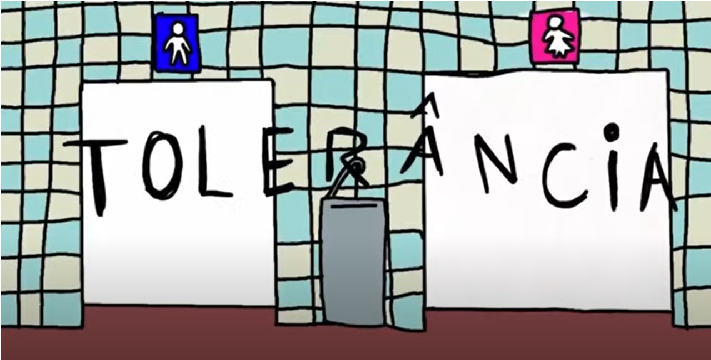
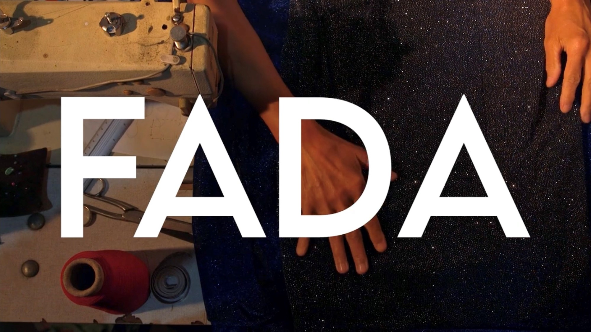
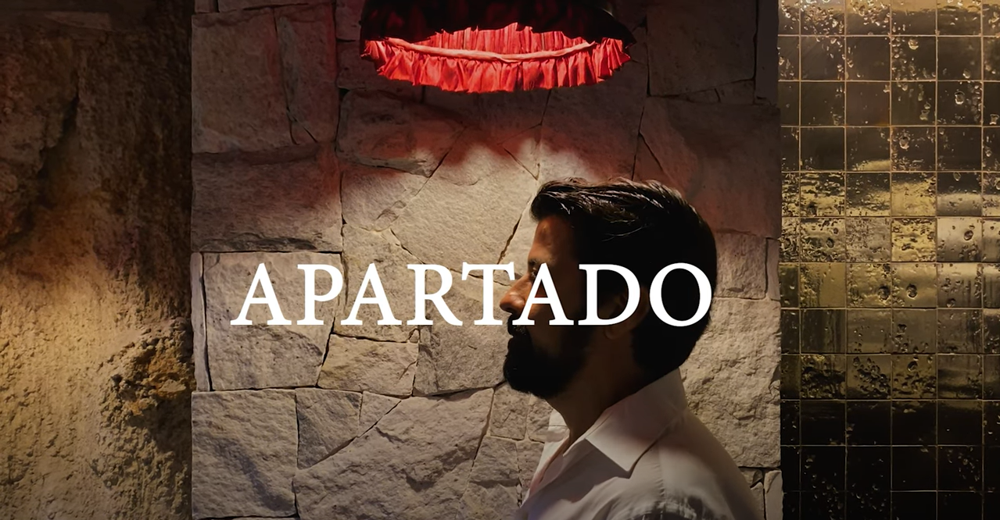
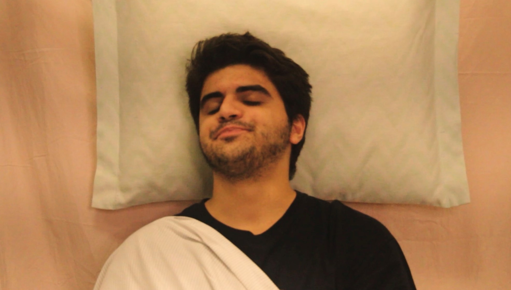
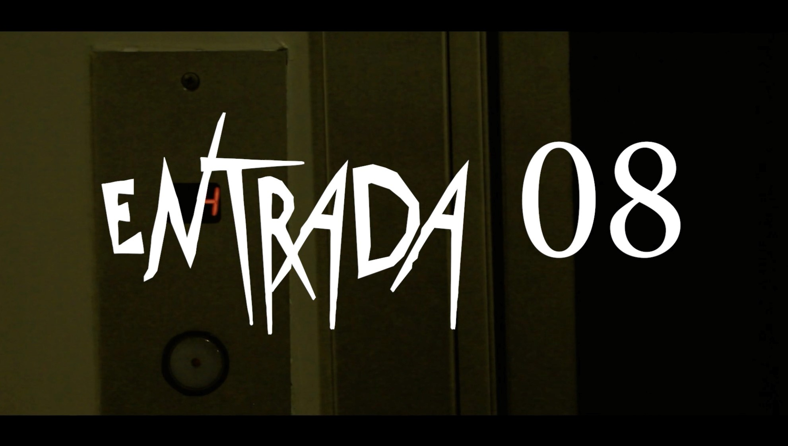
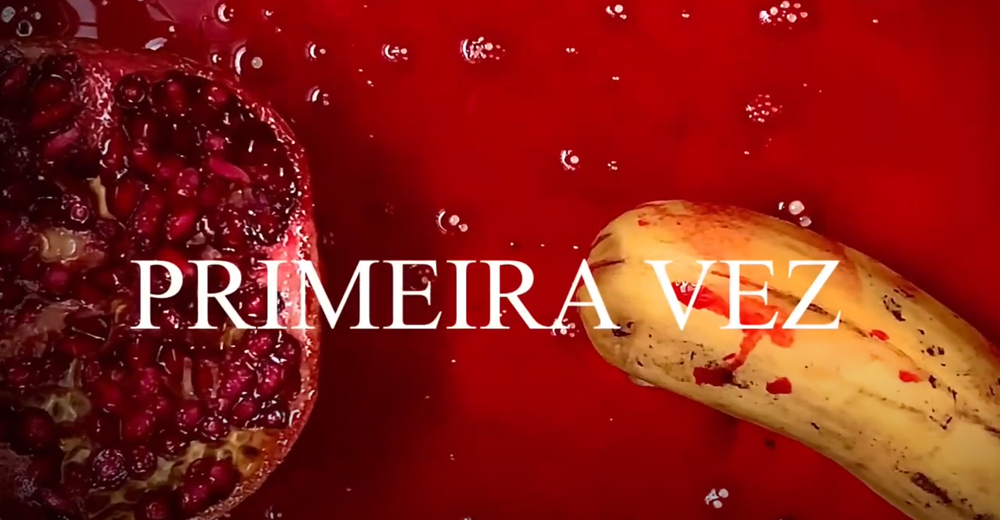

Curta Tolerância foi feito em Setembro de 2022 e ganhou o prêmio DenkMalNach. Helena Karg fez a animação toda.

Curta Fada foi feito em Junho de 2022 e ganhou em décimo primeiro no concurso da AIC Cinema. Helena fez a edição e deu assistência de som.

Curta Apartado foi feito em Fevereiro de 2023. Helena realizou todo o curta.

Curta Estouro foi feito em Março de 2023. Helena participou da direção de arte e do roteiro.

Curta Entrada 08 foi feito em Abril de 2023. Helena participou da direção de arte e da produção.

Curta Primeira Vez foi feito em Abril de 2023. Helena fez todo o curta, juntando também diversos vídeos já existentes.